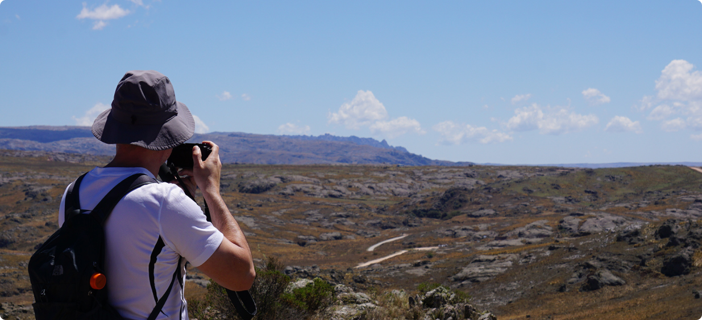

Apertura y cierre de la tranquera sobre Ruta Provincial Nº 34 (km 59,5):
Todos los días (incluyendo feriados nacionales).
Ingreso: de 8 a 15 horas.
Cierre: 20 horas.
Se puede ingresar todos los días de semana con guía.
Horario de atención del Centro de Visitantes Achala (y permanencia en estacionamiento N°1):
De 8 a 20 horas.
Sitios para visitar y actividades
Balcón Norte (con senderos interpretativos), bajada al Río de los Condoritos y Balcón Sur (únicamente con guías de trekking habilitados), los dos puntos de observación de cóndores sobre la Quebrada del Condorito. Están vinculados por una pasarela que cruza el río Condorito.
Acampar únicamente en La Cañada y Pampa Pajosa, tramitando los registros de ingreso y de acampe correspondientes. Para acampar es obligatorio llevar calentador homologado.
La pesca recreativa se encuentra habilitada desde el 30 octubre hasta fines de mayo. El permiso es obligatorio y se puede solicitar gratuitamente en quebradadelcondorito@apn.gob.ar y/o a través de un formulario virtual.

Registro Obligatorio
Para acceder sin guía al Balcón Norte y/o el Río de los Condoritos es necesario completar un registro obligatorio.
Lo completa un sólo responsable por grupo, realizando un registro por vehículo según la capacidad del mismo (entre 5 y 6 personas por auto) e incluyendo los datos de todos los acompañantes.
El registro se realiza de manera virtual, a través de un formulario web.
En caso de acceder en ómnibus u otro medio, se completa el registro hasta 6 personas por responsable (no repetir el nombre del responsable en más de un registro).
Acompañantes: recordá presionar "confirmar acompañante" luego de cargar a cada uno, incluso el último; de lo contrario el sistema no lo guardará. Por último, presioná guardar y confirmar.
Guías
Para acceder al Balcón Sur o hacer trekking a campo traviesa tenés que contratar previo a la visita una excursión con guía habilitado.
Los/as guías cuentan con cupos aparte, por lo que si contratás este servicio no es necesario llenar el registro online, ya que lo hacen ellos. Consultá el costo/valor de cada excursión con los/as guías y prestadores habilitados (ver archivo en Descargas, al final de esta página).
Acampe
El Parque ofrece acampe libre, gratuito y agreste en las áreas La Cañada y Pampa Pajosa.
Tramitá tu permiso de acampe una vez que tengas confirmado el registro de ingreso (indicado más arriba) y con unos días de anticipación a la visita al Parque.
El acampe en otras áreas está permitido únicamente con guías/prestadores habilitados.
Pesca
La temporada de pesca se extiende desde el 28 de octubre de 2022 hasta el 28 de mayo de 2023.
Sólo se puede pescar en temporada con permiso, gestionado por vía virtual.
Visitas Nocturnas
Se realizan de lunes a domingos, únicamente mediante la contratación de guías habilitados (incluye Luna Llena).
Bicicletas
Sólo está habilitado en caminos vehiculares 2 y 7. No se permite el ingreso con bicicletas en el sendero que va a la Quebrada.
Residuos
Llevá siempre una bolsa (en lo posible color oscuro, no transparente) para ir dejando allí los residuos generados durante tu visita, incluyendo papel higiénico, pañales o apósitos femeninos, para ser retirados fuera del Parque y dispuestos en el sitio correspondiente. No dejes residuos en el Parque Nacional; llevalos con vos.
Más información de interés
El Parque no cuenta con servicios de gastronomía, pernocte ni agua potable.
Se recomienda cargar combustible en Córdoba, Villa Carlos Paz o Mina Clavero, según el punto de acceso al Camino de las Altas Cumbres.
Las únicas empresas de transporte público con parada en el Paraje La Pampilla (ingreso al área Noreste del Parque, por donde se llega caminando a la Quebrada del Condorito) son COATA y ERSA. Las demás cobran pasaje hasta Mina Clavero y no es seguro que se detengan en el mencionado paraje.
Es necesario contar con calzado adecuado para la caminata (con cordón que sujete el pie), llevar agua, protector solar, gorro, abrigo y comida para la todo el día.
Para realizar las caminatas se recomienda ingresar temprano y solicitar previamente toda la información necesaria.
Villa Carlos Paz y Mina Clavero ofrecen un equipamiento receptivo completo.
Las respuestas a consultas sobre registros (incluyendo modificaciones de datos) tienen lugar únicamente de lunes a viernes de 8 a 16 horas.
![]()